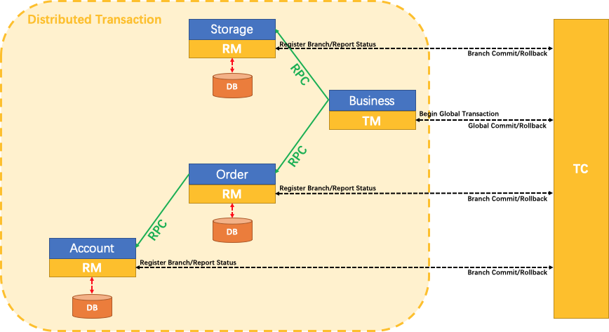

Seata¶
1. 架构原理¶

TC (Transaction Coordinator) 事务协调者
维护全局和分支事务的状态，驱动全局事务提交或回滚。
TM (Transaction Manager) 事务管理器
定义全局事务的范围：开始全局事务、提交或回滚全局事务。
RM(Resource Manager) 资源管理器
管理分支事务处理的资源，与 TC 交谈以注册分支事务和报告分支事务的状态，并驱动分支事务提交或回滚。
2. 二阶段锁协议¶
二阶段锁协议（Two-Phase Locking，2PL），常见并发控制机制，用于保证事务的可串行化，一般用于单节点并发控制协议。
2.1 加锁阶段（Growing Phase）¶
事务可以申请新的锁（读/写锁，加锁操作在读/写数据之前完成），不能释放任何已经持有的锁
2.2 解锁阶段（Shrinking Phase）¶
事务释放了任意一个锁，不能再申请新锁
3. 二阶段提交协议¶
二阶段提交协议（Two-Phase Commit Protocol，2PC）是一种分布式事务一致性协议，用于确保多个参与节点在一个事务中 要么全部提交，要么全部回滚，一般用于解决跨节点一致性协议。
3.1 准备阶段（Prepare）¶
-
协调者向所有参与者发送 prepare 请求
-
每个参与者执行以下操作：
-
进行本地事务的预执行（不提交）
-
写入 undo log / redo log，确保可以回滚或恢复
-
如果执行成功，返回 Yes 给协调者；如果失败，返回 No
-
协调者收集所有参与者的响应
3.2 提交阶段（Commit）¶
- 响应全为 Yes
- 协调者向所有参与者发送 commit 请求
- 参与者提交本地事务并释放资源
- 向协调者返回提交成功的确认
- 响应全为 No 或 超时
- 协调者向所有参与者发送 rollback 请求
- 各参与者根据 undo log 回滚
- 返回回滚确认